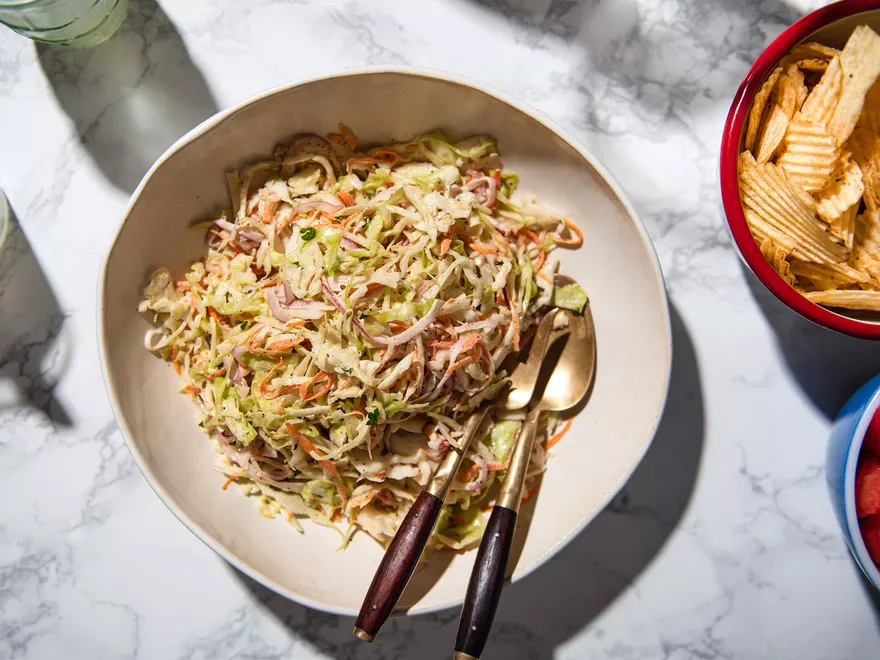

Serious Eats Coleslaw

Description
Kenji's Coleslaw recipe with some slight modifications by me to amp up the sour and sweet.
Ingredients
For the Slaw Mix
- 1 large head green cabbage, ~3.5lbs finely shredded
- 1 large red onion, finely sliced
- 1 large carrot, peeled and grated
- 1/4 cup chopped parsley
- 1 cup white sugar
- 1/2 cup kosher salt
For the Dressing
- 3/4 cup mayonnaise
- 1/4 cup 10% vinegar
- 2 tablespoons dijon mustard
- 1 tablespoon freshly ground black pepper
- 1/2 cup sugar
Steps
- Combine veggies in a large bowl. Sprinkle with salt and sugar and toss to combine. Lest rest 5 minutes then transfer to a large colander and rinse thoroughly under cold running water.
- Transfer rinsed mixture to salad spinner and spin dry. Return to container with lid and set aside
- For the Dressing: Combine ingredients and whisk until homogenous
- Pour dressing over cabbage mixture and toss to coat. Cover with lid and place in fridge overnight. Coleslaw will be pucker-inducing at first, add more sugar as necessary.